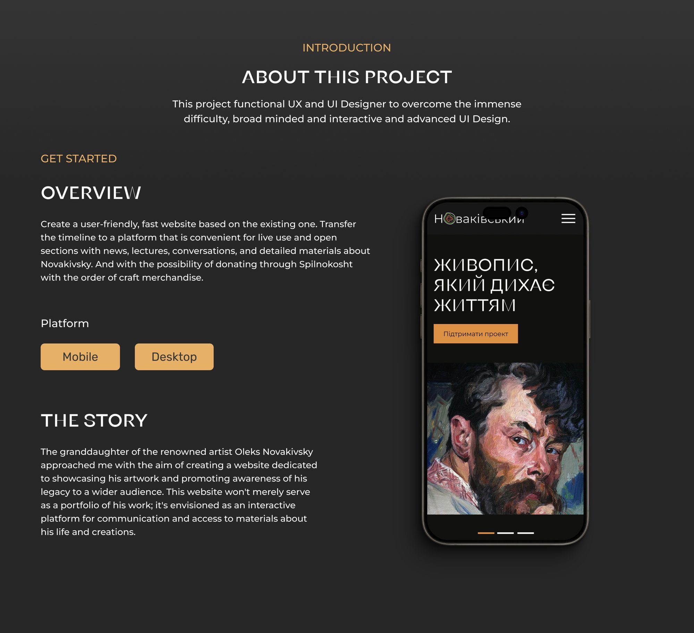

Context
Oleksa Novakivskyi (1872–1935) is often called the Ukrainian Van Gogh: thick, restless brushstrokes, burning colour, portraits that look straight through you. He founded the Lviv art school, yet his name is still far less known than it deserves to be.
The artist's great-granddaughter asked me to redesign the gallery's website: a living place to meet the artist, follow news and lectures, read about his life and support the project. This is a supporting case about visual storytelling and brand expression for a cultural product.
